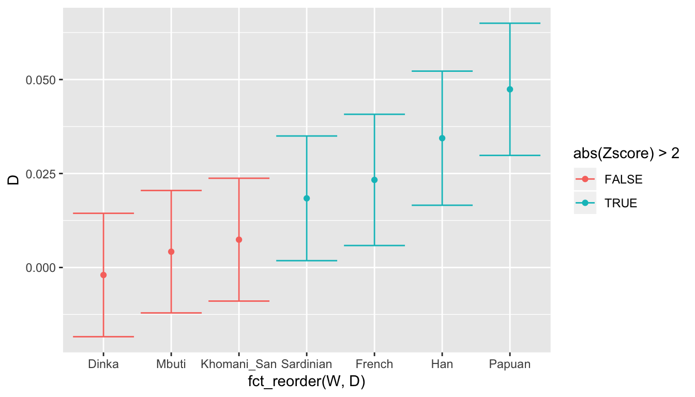
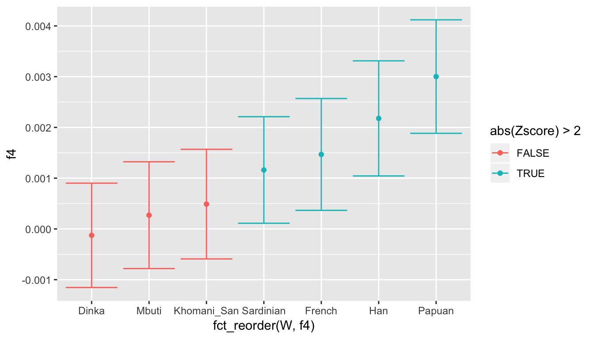
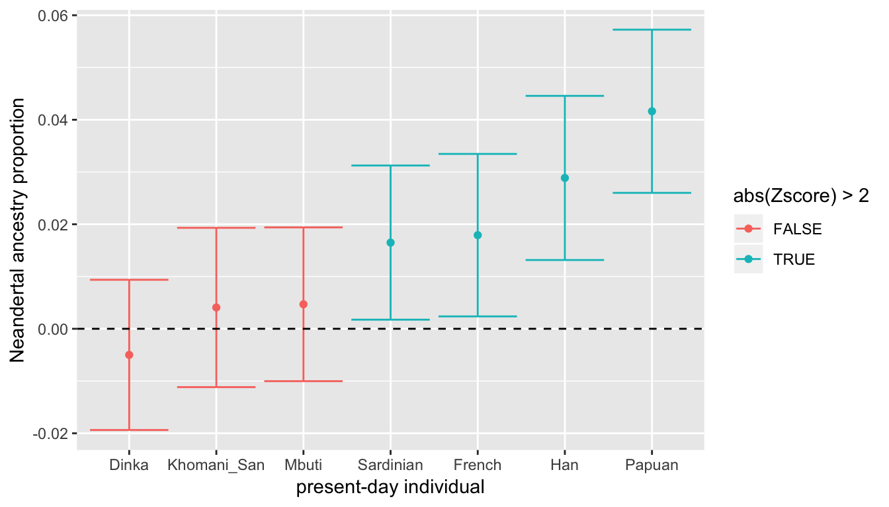

ADMIXTOOLS is a widely used software package for calculating statistics and testing hypotheses about population admixture. However, although powerful and comprehensive, it is not exactly user-friendly.
A typical ADMIXTOOLS workflow usually involves a combination of sed/awk/shell scripting and manual editing to create different configuration files. These are then passed as command-line arguments to one of ADMIXTOOLS’ commands, controlling how to run a particular analysis. The result of each analysis is then redirected to another file, and the user needs to extract values of interest from this file (which is full of redundant information), most likely using more shell scripting or (worse) by manual copy-pasting. The results are then analysed in R, Excel or another program.
This workflow is very cumbersome, especially if one wants to explore many hypotheses involving different combinations of populations. Most importantly, however, it makes it difficult to follow good practices of reproducible science.
This R package makes it possible to perform all stages of ADMIXTOOLS analysis entirely from within R. It provides a set of convenient functions that completely abstract away the need for “low level” configuration of individual ADMIXTOOLS programs, allowing the user to focus on the analysis itself.
To install admixr from Github you need to install the package devtools first. To do this, you can simply run:
Furthermore, if you want to follow the examples in this vignette, you will need the tidyverse collection of packages, which you can install with:
When everything is ready, you can load both packages:
library(admixr)
library(tidyverse)
#> ── Attaching packages ─────────────────────────────────── tidyverse 1.2.1 ──
#> ✔ ggplot2 3.0.0 ✔ purrr 0.2.5
#> ✔ tibble 1.4.2 ✔ dplyr 0.7.6
#> ✔ tidyr 0.8.1 ✔ stringr 1.3.1
#> ✔ readr 1.1.1 ✔ forcats 0.3.0
#> ── Conflicts ────────────────────────────────────── tidyverse_conflicts() ──
#> ✖ dplyr::filter() masks stats::filter()
#> ✖ dplyr::lag() masks stats::lag()Note that in order to run admixr analyses, you need a working installation of ADMIXTOOLS! Explaining how to compile it is beyond the scope of this document, but you can find help here. Furthermore, you need to make sure that R can find ADMIXTOOLS binaries on the $PATH. If this is not the case, running library(admixr) will give a message with instructions on how to do this.
If you have an EIGENSTRAT “triplet” of files ready, and just want to know how to calculate different admixture statistics, feel free to skip this section.
ADMIXTOOLS software uses a peculiar set of genetic file formats, which seem strange if you are used to working with VCF files. However, the basic idea remains the same - we want to store and access SNP data (REF/ALT alleles) of a set of individuals at a defined set of genomic positions.
EIGENSTRAT datasets always contain three kinds of files:
ind file - specifies name, sex and population assignment of each samplesnp file - specifies positions of SNPs, REF/ALT alleles etc.geno file - specifies SNP data in a dense string-based format:
As you can see, a VCF file is essentially a combination of all three files in a single file. Luckily for us, all three EIGENSTRAT files usually share a common path and prefix (at least you should try to make it so whenever you work with them). This allows us to work with just the prefix, instead of worrying about individual files.
As such, all main admixr functions accept an argument called prefix, which specifies the path to and prefix of all three EIGENSTRAT files (you can still work with individual files if you need to, using ind, snp and geno arguments of each admixr function, but try to avoid that).
Here is a prefix of a small testing SNP dataset that’s distributed with admixr. We will be using this dataset in the rest of this vignette.
(eigen <- file.path(system.file(package = "admixr", "extdata"), "snps"))
#> [1] "/Users/martin_petr/local/R_LIBS/admixr/extdata/snps"We can verify that there are three files with this prefix, as they should be:
dir(path = dirname(eigen), full.names = TRUE)
#> [1] "/Users/martin_petr/local/R_LIBS/admixr/extdata/snps.geno"
#> [2] "/Users/martin_petr/local/R_LIBS/admixr/extdata/snps.ind"
#> [3] "/Users/martin_petr/local/R_LIBS/admixr/extdata/snps.snp"Let’s look at their contents.
ind file
#> Chimp U Chimp
#> Mbuti U Mbuti
#> Yoruba U Yoruba
#> Dai U Dai
#> Khomani_San U Khomani_San
#> Han U Han
#> Dinka U Dinka
#> Sardinian U Sardinian
#> Papuan U Papuan
#> French U French
#> Vindija U Vindija
#> Altai U Altai
#> Denisova U Denisovasnp file (first 3 lines)
#> 1_777122 1 0.007771 777122 A T
#> 1_832756 1 0.008328 832756 T G
#> 1_834832 1 0.008348 834832 G Cgeno file (first 3 lines)
#> 9220000000000
#> 9022021012000
#> 9022021012000admixr
The goal of admixr is to make ADMIXTOOLS analyses as trivial to perform as possible, without having to worry about par/pop/log/left/right files (in ADMIXTOOLS’ jargon) and other low-level details.
The only interface between you and ADMIXTOOLS is the following set of R functions:
Anything that would normally require dozens of lines of shell scripts can be (most of the time) accomplished by running a single line of R code.
admixr
The following sections describe the usage of admixr on a set of example analyses that one might be interested in doing.
d() functionNext question we could ask is - how closely related are different African populations to non-Africans today? One way to look at this is using the following D statistic: \(D(\textrm{non-African}, \textrm{Denisova}, \textrm{African Y}, \textrm{Chimp})\). This statistic is simply based on counting sites that match an African \(Y\), and is informative about the “branching” order of non-Africans from non-Africans over time. The more positive this \(D\) statistic is, the more recently did non-Africans split from an African population \(Y\).
# save sample names into variables for more readable code
nonafr <- c("French", "Sardinian", "Han", "Papuan")
afr <- c("Khomani_San", "Mbuti", "Yoruba", "Dinka")Then we can simply run:
Which will return the following data.frame:
| W | X | Y | Z | D | stderr | Zscore | BABA | ABBA | nsnps |
|---|---|---|---|---|---|---|---|---|---|
| French | Denisova | Khomani_San | Chimp | 0.3922 | 0.007191 | 54.543 | 13710 | 5985 | 194959 |
| French | Denisova | Mbuti | Chimp | 0.4255 | 0.006923 | 61.465 | 14683 | 5918 | 194981 |
| French | Denisova | Yoruba | Chimp | 0.4793 | 0.006408 | 74.785 | 16533 | 5820 | 194985 |
| French | Denisova | Dinka | Chimp | 0.5158 | 0.006256 | 82.441 | 17286 | 5522 | 195010 |
| Sardinian | Denisova | Khomani_San | Chimp | 0.3915 | 0.007093 | 55.196 | 13924 | 6089 | 194883 |
| Sardinian | Denisova | Mbuti | Chimp | 0.4254 | 0.006664 | 63.838 | 14918 | 6013 | 194908 |
We can see that the resulting data.frame object contains all the input information, but also additional statistics:
D - \(D\) statistic valuestderr - standard error of the \(D\) statistic from the block jackknifeZscore - \(Z\) significance valueBABA/ABBA - counts of observed site patternsnsnps - number of SNPs used for the calculation in this rowThe format of output tables from other other admixr functions is very similar.
In general, tables are not the best representation of this kind of data, especially as the number of samples increases. This is how we can plot the results instead (using the ggplot2 package):
ggplot(result, aes(fct_reorder(Y, D), D, color = W)) +
geom_point() +
labs(x = "African population Y")
We can see that the closest African population to non-Africans today are East African Dinka (indicated by the highest \(D\) statistic value), which is consistent with the hypothesis that the ancestors of all non-Africans today split from the East African lineage during the Out of Africa migration. Decreasing values of the \(D\) statistic for Yoruba, Mbuti and San fits with what we know about the split times of African from other studies, with San being the most divergent modern human population, followed by Mbuti, Yoruba and Dinka.
f4() functionAn alternative way of addressing the previous question is to use the \(f_4\) statistic, which is very similar to \(D\) statistic. In fact, if \(D\) is calculated as
\[ D = \frac{\textrm{# BABA sites - # ABBA sites}}{\textrm{# BABA sites + # ABBA sites}},\]
\(f_4\) statistic is simply obtained by skipping the normalization step, and is equal to the numerator of the \(D\) statistic. Therefore,
\[ f_4 = \textrm{# BABA sites - # ABBA sites}\]
Sometime one is more convenient than other though, so admixr provides a separate function for calculating \(f_4\) statistics called f4.
To repeat the previous analysis using \(f_4\) statistic, we can run:
| W | X | Y | Z | f4 | stderr | Zscore | BABA | ABBA | nsnps |
|---|---|---|---|---|---|---|---|---|---|
| French | Denisova | Khomani_San | Chimp | 0.039622 | 0.000797 | 49.704 | 13710 | 5985 | 194959 |
| French | Denisova | Mbuti | Chimp | 0.044957 | 0.000784 | 57.329 | 14683 | 5918 | 194981 |
| French | Denisova | Yoruba | Chimp | 0.054941 | 0.000851 | 64.572 | 16533 | 5820 | 194985 |
| French | Denisova | Dinka | Chimp | 0.060324 | 0.000889 | 67.865 | 17286 | 5522 | 195010 |
| Sardinian | Denisova | Khomani_San | Chimp | 0.040205 | 0.000804 | 50.007 | 13924 | 6089 | 194883 |
| Sardinian | Denisova | Mbuti | Chimp | 0.045688 | 0.000784 | 58.260 | 14918 | 6013 | 194908 |
ggplot(result, aes(fct_reorder(Y, f4), f4, color = W)) +
geom_point() +
labs(x = "African population Y")
As we can see, we can make the same conclusion using \(f_4\) statistic. The higher the \(f_4\) value, the more shared drift occured between the samples \(W\) and \(Y\). In other words, because the amount of drift on a branch is equivalent to the length of that branch (i.e. time), higher values of \(f_4\) indicate a more recent split between \(W\) and \(Y\).
f4ratio() functionIf we are einterested in estimating the proportion of ancestry coming from a parental lineage, we can use ratio of \(f_4\) statistics.
For example, we might be interested in knowing what is the proportion of Neandertal ancestry in a set of present-day humans. Using the nomenclature of Patterson et al. 2012, we can perform this calculation using the following code (X being a vector of samples in which we want to estimate Neandertal ancestry):
result <- f4ratio(
X = c("French", "Sardinian", "Han", "Papuan", "Dinka", "Mbuti", "Khomani_San"),
A = "Altai", B = "Vindija", C = "Yoruba", O = "Chimp",
prefix = eigen
)The ancestry proportion (number between 0 and 1) is given in the “alpha” column:
| A | B | X | C | O | alpha | stderr | Zscore |
|---|---|---|---|---|---|---|---|
| Altai | Vindija | French | Yoruba | Chimp | 0.017916 | 0.007773 | 2.305 |
| Altai | Vindija | Sardinian | Yoruba | Chimp | 0.016491 | 0.007376 | 2.236 |
| Altai | Vindija | Han | Yoruba | Chimp | 0.028865 | 0.007855 | 3.675 |
| Altai | Vindija | Papuan | Yoruba | Chimp | 0.041625 | 0.007808 | 5.331 |
| Altai | Vindija | Dinka | Yoruba | Chimp | -0.004999 | 0.007186 | -0.696 |
| Altai | Vindija | Mbuti | Yoruba | Chimp | 0.004688 | 0.007357 | 0.637 |
ggplot(result, aes(fct_reorder(X, alpha), alpha, color = abs(Zscore) > 2)) +
geom_point() +
geom_errorbar(aes(ymin = alpha - 2 * stderr, ymax = alpha + 2 * stderr)) +
geom_hline(yintercept = 0, linetype = 2) +
labs(y = "Neandertal ancestry proportion", x = "present-day individual")
Despite the wide confidence intervals (caused by a very low number of SNPs in our testing dataset), we can make several interesting observations:
Again, as you can see, we got a nice “publication-ready” figure in just a few lines of R code! No shell, no awk/grep, no manual editing and no copy-pasting required. 👍